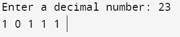

#include<stdio.h>
//covert number into binary using recursion
void main()
{
int n;
printf("Enter a decimal number: ");
scanf("%d",&n);
convert(n);
}
void convert(int n)
{
if (n > 0)
{
convert(n / 2);
printf("%d ", n % 2);
}
else
return ;
}
Output:
